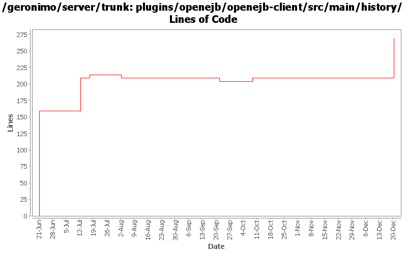

[root]/plugins/openejb/openejb-client/src/main/history

| Author | Changes | Lines of Code | Lines per Change |
|---|---|---|---|
| Totals | 7 (100.0%) | 289 (100.0%) | 41.2 |
| genspring | 2 (28.6%) | 214 (74.0%) | 107.0 |
| djencks | 1 (14.3%) | 60 (20.8%) | 60.0 |
| rwonly | 3 (42.9%) | 15 (5.2%) | 5.0 |
| xuhaihong | 1 (14.3%) | 0 (0.0%) | 0.0 |
GERONIMO-6240 Modify configs so that they use features as the bootstrap, and fix a few compile and test errors. Servers build but do not fully start
60 lines of code changed in 1 file:
update dependencies.xml files
10 lines of code changed in 1 file:
Update myfaces dependency, use geronimo bundled myfaces
0 lines of code changed in 1 file:
some codes clean up
0 lines of code changed in 1 file:
update dependencies.xml files
5 lines of code changed in 1 file:
some dependencies.xml changes after building openjb plugins.
55 lines of code changed in 1 file:
GERONIMO-6018 Geronimo does not support @ManagedBean defined in app client module.
1, added a openejb-client module to only contain openejb system and managed container.
2, add a ClientEJBBuiler so that client-deployer could use it to build @ManagedBean in app client module.
3, updated EJBModuleBuilder and AppClientModuleBuilder to do the ejb in clientmodule deployment work.
159 lines of code changed in 1 file: